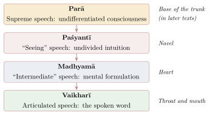
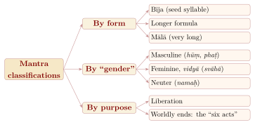

Chapter 7: Mantraśāstra: The Theory and Practice of Mantra¶
7.1 Introduction¶
Mantras — formulae of sacred speech — are the most pervasive element of Tantric religion. The Sanskrit word combines the root man, “to think”, with the instrumental suffix -tra: a mantra is an “instrument of thought”. Tantric authors also give a devotional etymology, much quoted, according to which a mantra is so called because it “protects” (trāyate) through “reflection” (manana). In Tantric ritual nothing is done without mantras: they are the means by which deities are invoked and worshipped, the body is purified, initiation is conferred and powers are obtained (Padoux 1990; Alper 1989).
Tantric theologians regard the mantra not as a conventional sign but as the deity’s own form in sound. This view rests on a doctrine of the Word that the Tantras share in part with the Vedic tradition and with the grammarian Bhartṛhari.
7.2 The Word as Absolute¶
The idea that ultimate reality has the nature of speech has deep roots. The Ṛgveda’s hymn of Vāc (ṚV 10.125) presents Speech as a goddess who pervades the worlds, and the Bṛhadāraṇyaka Upaniṣad (4.1.2) declares that speech is the highest Brahman (vāg vai samrāṭ paramaṃ brahma). The grammarian Bhartṛhari’s Vākyapadīya (5th century) teaches that Brahman is the eternal Word-principle (śabdatattva) from which the world unfolds, and that all cognition is permeated by language. Building on him, Utpaladeva and Abhinavagupta identified the supreme Word (parā vāc) with the self-awareness (vimarśa) of Śiva, so that consciousness itself is, at its root, linguistic; and in later yoga the contemplation of inner sound (nāda) became a path to realisation (Section 7.10).
7.2.1 The Levels of Speech¶
Bhartṛhari distinguished three levels of speech: paśyantī (“seeing”, the undivided intuition), madhyamā (“intermediate”, mental formulation) and vaikharī (articulated sound). The Kashmiri Śaivas added a fourth and highest level, parā (“supreme”), identified with Śiva’s consciousness (Figure 7.1). Later texts locate the levels in the body (Padoux 1990). Mantra practice reverses the descent of speech: recitation moves from the audible to the murmured and the mental, and finally to silent awareness.

7.3 The Structure and Classification of Mantras¶
7.3.1 The Elements of a Mantra’s Use¶
In later ritual manuals the use (viniyoga) of a mantra is introduced by naming:
-
its seer (ṛṣi), the sage who first received it;
-
its metre (chandas);
-
its deity (devatā);
-
its seed (bīja), power (śakti) and “peg” (kīlaka), elements thought to contain, express and secure its power.
7.3.2 Classifications¶

Mantras used for worldly ends (Figure 7.2) were grouped as the “six acts” (ṣaṭkarmāṇi): pacification (śānti) of illness and calamity, subjugation (vaśya), immobilisation (stambhana), causing dissension (vidveṣaṇa), driving away (uccāṭana) and killing (māraṇa). Their presence in the manuals is a reminder that Tantric ritual served practical and sometimes aggressive purposes as well as liberation.
7.3.3 The Six Acts in the Manuals¶
The lists vary. Some texts replace one of the six with “attraction” (ākarṣaṇa) or “bewitching” (mohana), and some add “increase” (puṣṭi) of wealth and health; the number six is, like many Tantric numbers, a classificatory ideal. What the lists share is the conviction that the same mantra-deity who grants liberation can be directed, by the right procedure, to any worldly end, and that each end requires its own ritual setting.
Gudrun Bühnemann’s study of the medieval digests, among them the Śāradātilaka (c. 11th century) and the Mantramahodadhi (1589), shows how elaborately that setting was specified (Bühnemann 2000). For each of the six acts the manuals prescribe a presiding goddess, a direction to face, a season and a time of day, a colour for the worshipper’s dress and for the flowers and substances offered, a posture and a kind of seat, a hand gesture, the material of the rosary, the shape of the fire-pit and the substances to be offered into the fire. Pacification, for instance, is associated with white, with calm postures and with auspicious substances, the destructive rites with black or dark colours, the south, inauspicious times and impure substances. A further variable is the way in which the name of the person to be affected is combined with the mantra: it may be placed before or after the mantra, enclosed by it on both sides, or interwoven with its syllables, each arrangement being suited to a different act. The system is a grammar of correspondences, in which the practitioner composes the rite for a desired effect much as a poet composes a verse for a desired sentiment.
The six acts were not confined to Hindu manuals. Jain mantra texts devoted to the goddesses Jvālāmālinī and Padmāvatī (Chapter 10) give rites of the same kind, and Buddhist Tantra developed a parallel and simpler scheme of four rites — pacifying, increasing, subjugating and fierce — performed in fire-pits that are respectively round, square, semicircular and triangular and associated with white, yellow, red and black. This fourfold fire ritual passed with Esoteric Buddhism to China and Japan, where it survives in the Shingon goma (Section 10.16).
The ethics of these rites troubled the traditions themselves. Many texts reserve the destructive acts for the protection of the king, the defence of the faith or the punishment of grave wrongdoers, impose expiations on the practitioner who performs them, and warn that a misdirected rite rebounds on its author; Buddhist authors justified the fierce rites as acts of compassion that free the victim from evil karma. Courts and kings, for their part, were among the main clients of such services (Chapter 12). In modern India the same repertoire survives in the advertisements of self-styled tāntriks offering to subdue rivals or win back a lover, and laws against superstition and fraud have been used to prosecute those who sell them (Section 14.3).
7.3.4 The Six “Limb” Mantras¶
One of the most widespread structures in Tantric mantra practice is the set of six “limb” mantras (aṅgamantras) that accompany a deity’s root mantra. Each is formed from the deity’s seed syllable with a characteristic ending (jāti), and each is placed on a part of the body in aṅganyāsa and karanyāsa (Table 7.1).
| Limb | Placed on | Ending |
|---|---|---|
| Heart (hṛdaya) | Heart | namaḥ |
| Head (śiras) | Head | svāhā |
| Topknot (śikhā) | Crown | vaṣaṭ |
| Armour (kavaca) | Shoulders and chest | hūṃ |
| Eyes (netra) | Eyes | vauṣaṭ |
| Weapon (astra) | Around the body, with a clap or snap | phaṭ |
Several of these endings (svāhā, vaṣaṭ, vauṣaṭ) are exclamations of the Vedic sacrifice, showing again how Tantric ritual reworked Vedic materials. The “weapon” mantra ending in phaṭ is used throughout worship to expel obstacles and to seal the ritual space.
7.4 Seed Syllables (Bījas)¶
Monosyllabic “seed” mantras, usually ending in the nasal -ṃ, are regarded as the most concentrated form of a deity’s power. Many have no lexical meaning (Table 7.2).
| Bīja | Name | Deity / principle | Traditional association |
|---|---|---|---|
| oṃ | Praṇava | Brahman; Śiva; Viṣṇu | Prefixed to most mantras |
| hrīṃ | Māyābīja | Bhuvaneśvarī | The Goddess as power of manifestation |
| krīṃ | Kālī’s seed | Kālī | |
| klīṃ | Kāmabīja | Kāma; Kṛṣṇa; the Goddess | Desire, attraction |
| aiṃ | Vāgbhava | Sarasvatī | Speech, learning |
| śrīṃ | Śrībīja | Lakṣmī | Prosperity |
| hūṃ | Varma / kūrca | Fierce deities | Protection, “armour” |
| gaṃ | Gaṇeśa’s seed | Gaṇeśa | Removal of obstacles |
| hauṃ | Prāsāda | Sadāśiva | The “palace” mantra of Śaiva worship |
| strīṃ | Vadhūbīja | Tārā | |
| hlīṃ | — | Bagalāmukhī | Paralysis (stambhana) of enemies |
Commentators analyse each bīja into its components. A traditional analysis of krīṃ, for example, takes k as Kālī, r as fire (Brahman), ī as the Goddess’s power (Māyā), and the final nasal, written as a dot and crescent (bindu and nāda), as the transcendent resonance into which the sound dissolves.
7.5 The Alphabet as Divine Matrix (Mātṛkā)¶
The Tantras regard the fifty (or fifty-one) phonemes of Sanskrit as the “matrix” (mātṛkā, “little mother”) from which all mantras, all language and the cosmos itself emerge. In the Trika, following the Mālinīvijayottara, the vowels are called the “seed” (bīja) and associated with Śiva, while the consonants are the “womb” (yoni) associated with Śakti; their union produces the world. The consonants from ka to ma are correlated with the twenty-five tattvas from earth to the limited soul, and the remaining phonemes with the higher principles. The Trika also worships the alphabet in a second, “mixed” order, beginning with na and ending with pha, personified as the goddess Mālinī. Abhinavagupta’s Parātriśikāvivaraṇa develops this phonematic theology into a meditation on the word ahaṃ (“I”), whose first and last letters, a and ha, embrace the whole alphabet and so the whole cosmos (Padoux 1990).
7.5.1 Placing the Alphabet on the Body¶
In mātṛkānyāsa, one of the most common preparatory rites of Tantric worship, the worshipper places each phoneme, with the nasal -ṃ added, on a point of the body: the vowels on the head and face, the consonant groups on the arms, legs, sides, back and abdomen, the remaining letters on the heart and other centres. The body thereby becomes an image of the cosmos in sound.
7.6 Japa: Recitation¶
Japa, the repeated recitation of a mantra, is the most widely practised form of mantra discipline. The manuals distinguish audible recitation (vācika); whispered recitation (upāṃśu), in which the lips move but the sound is barely audible; and purely mental recitation (mānasa), regarded as the most effective. Beyond these lies the “unrecited” mantra (ajapā) haṃsa, said to be repeated naturally with each breath (Section 7.12).
7.6.1 The Discipline of Recitation¶
The mantra must be received from a qualified guru, and recitation is preceded by bathing, the purification of body and place, and nyāsa. It is performed regularly, at fixed times and places, and counted on a rosary (mālā), commonly of 108 beads of rudrākṣa, tulasī, crystal or other materials according to the deity, in fixed numbers of repetitions. Before a mantra can be used, a preliminary course of recitation (puraścaraṇa) — traditionally a hundred thousand repetitions for each syllable of the mantra, with accompanying fire offerings and observances — makes it “one’s own”.
7.7 How Mantras Work: The Tradition’s Account¶
The Tantric texts give a theological account of the efficacy of mantras. The mantra is the deity’s body in sound, so that to recite it is to make the deity present. For the Kashmiri Śaivas a mantra is effective only when the reciter’s awareness merges with the consciousness that the mantra embodies; without this “mantra-consciousness” (mantravīrya, mantracaitanya), recitation is mere sound. The guru, through initiation, is held to transmit the living power of the mantra, which is why a mantra read in a book is regarded as ineffective. And manuals such as the Śāradātilaka list numerous “defects” (doṣas) that render a mantra ineffective, with rites to remedy them.
These are claims of the tradition about ritual and religious efficacy. Modern scholars have approached mantras from linguistic, ritual and philosophical angles; some, such as Frits Staal, have even argued that many mantras are meaningless in the ordinary sense, a view contested by others (Alper 1989).
7.8 Mantras as Beings¶
In the Śaiva Siddhānta, mantras are not only sounds but conscious beings. Among the souls that inhabit the pure levels of the cosmos are classes of liberated beings called Mantras, Mantreśvaras (“lords of mantras”) and Mantramaheśvaras, who act as Śiva’s agents. Above all stand the eight Vidyeśvaras — Ananta, Sūkṣma, Śivottama, Ekanetra, Ekarudra, Trimūrti, Śrīkaṇṭha and Śikhaṇḍin — who are said to have received the scriptures from Śiva and to govern the lower creation on his behalf. When an initiate recites a mantra, he engages the power of such a being, ultimately the power of Śiva himself. Initiation into a mantra therefore establishes a relationship with a divine agent, and the rules surrounding mantras are rules of conduct towards a deity (Brunner-Lachaux 1963–1998).
7.8.1 Encoding Mantras¶
Because mantras were secret and powerful, the scriptures often do not state them directly. Instead they “extract” (uddhāra) them by code: the phonemes are named by cryptic designations (“the first of the fifth group”, “the bright one”, “fire”) or located on a diagram of the alphabet (prastāra), so that only one who has been taught the key can assemble the mantra. Commentators and ritual manuals decode these extractions, and they form one of the most technical parts of the literature.
7.9 Major Mantras¶
7.9.1 The Śaiva Pañcākṣara¶
The five-syllable mantra namaḥ śivāya (with the prefix oṃ, the six-syllable ṣaḍakṣara), already present in the Śatarudrīya of the Yajurveda, is the principal Śaiva mantra. Its syllables are correlated with the five elements, the five faces of Śiva and his five acts, and it is the subject of extended theological reflection in Tamil Śaiva Siddhānta.
7.9.2 The Vaiṣṇava Mantras¶
The eight-syllable mantra oṃ namo nārāyaṇāya and the twelve-syllable mantra oṃ namo bhagavate vāsudevāya are the principal Vaiṣṇava mantras; the latter is particularly associated with the Pāñcarātra and the Bhāgavata Purāṇa. See Chapter 3 for the Śrīvaiṣṇava “three mantras”.
7.10 Inner Sound (Nāda)¶
Later yoga texts such as the Haṭhapradīpikā (c. 15th century, chapter 4) and the Nādabindu Upaniṣad teach concentration on inner sounds (nāda) heard in meditation, compared to the roar of the ocean, thunder, kettledrums, a conch, a bell, a flute, a vīṇā and the humming of bees, progressing from louder to subtler sounds. The goal is absorption (laya) of the mind in the sound and beyond it.
7.11 Mantra in Āgamic Temple Worship¶
In Āgamic temple worship every ritual act is accompanied by its prescribed mantra. Mantras honour the door-guardians and remove obstacles as the priest enters the sanctum; they purify and divinise his body; they invoke the deity into the image; they consecrate the water, milk and other substances of the bath, and the food that is offered; they accompany the waving of lamps; and at the end of worship they dismiss the deity or ask it to remain.
The ritual manuals treat the mantra as the soul of the ritual act: an act performed without its mantra is defective and requires expiation (Davis 1991).
7.12 Haṃsa and the Nātha Tradition¶
The Nātha yogis, who trace their lineage to Matsyendranātha and Gorakṣanātha (c. 11th–13th centuries), developed a yoga in which mantra is closely linked with breath and the subtle body. Their texts, like many Tantras before them, teach the “unrecited” (ajapā) mantra haṃsa: the breath goes out with the sound ha and comes in with the sound sa, so that every living being repeats the mantra unawares — traditionally 21,600 times a day, a conventional figure based on fifteen breaths a minute. The yogin makes this recitation conscious; read in reverse, so ’ham (“I am He”), it becomes an affirmation of identity with the absolute. The emphasis falls differently in each tradition: the Śaiva Siddhānta treats its five- and six-syllable mantras, the five Brahma mantras and the six “limb” mantras as Śiva’s powers acting in ritual; Śrīvidyā stresses the identity of mantra, yantra and goddess; the Kashmiri Śaivas build a theology of consciousness on the phonemes and on mantras such as sauḥ and ahaṃ; the Nāthas join mantra to breath and the subtle body; and the Pāñcarātra centres its liturgy on the mantras of the vyūhas.